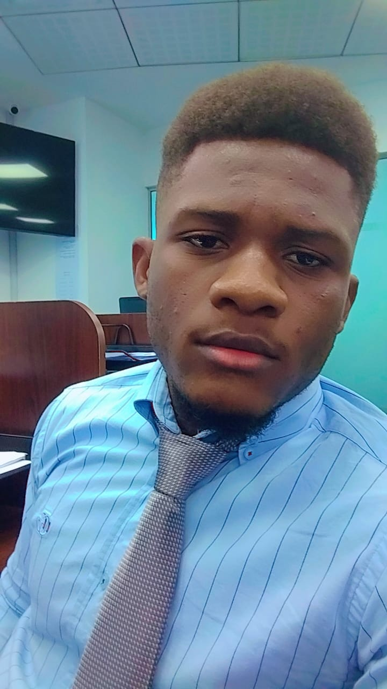

Our Mission
InfoClubSport is your ultimate online destination for all things football. As passionate enthusiasts of the beautiful game, we strive to provide our readers with comprehensive and engaging information about football players from around the world. Whether you're a die-hard fan looking to stay updated on your favorite athlete or a casual follower interested in learning more about the sport, InfoclubSport has you covered.
Our dedicated team of writers and analysts work tirelessly to bring you the latest news, in-depth player profiles, statistics, and exclusive interviews. We understand the importance of keeping our audience informed and entertained, which is why we go the extra mile to deliver high-quality content that resonates with football lovers of all ages.
Our Story
Welcome to our story! Founded in July 2024 by the visionary Amswon Abraham De Sodano Dorsainvil, we embarked on a journey to bring innovation and excellence into the world. From the very beginning, our mission has been to transform ideas into impactful realities, paving the way for a brighter, more connected future.
With a commitment to creativity, technology, and community, our team is dedicated to pushing boundaries and setting new standards. Every step of our journey reflects our passion for innovation and a relentless pursuit of excellence. We're excited to have you join us on this remarkable adventure, where the possibilities are endless, and the future is ours to create!